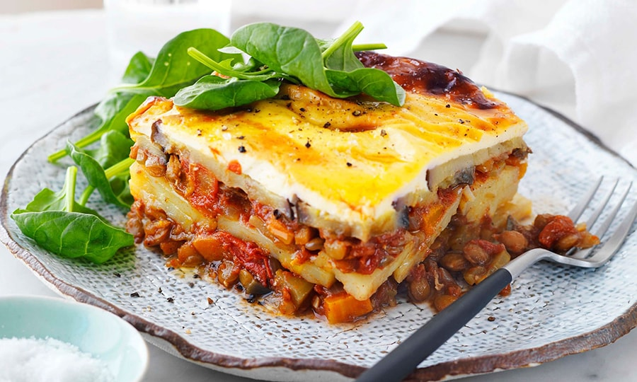

The national cuisine of Bulgaria, which is based on Balkan, Greek and Turkish gastronomic traditions, has much in common with the cuisines of neighbouring peoples, as well as its own distinctive features. Bulgarian cuisine is characterised by food combinations that are familiar to us. For salads, fresh and salted vegetables, local fermented milk products, including yoghurts, are used as a dressing. To have time to get acquainted with the local cuisine during your holiday, we suggest trying the best national dishes of Bulgaria.
Banitsa-Layer pie with filling. An unusual layer pie filled with stewed cabbage, feta cheese, lamb and more. In the classic recipe, the dough is laid out in a spiral into a round pan and baked. Inside each turn of the spiral, there is a filling. Banitsa is served as an independent dish or as a hot appetiser with salad, meat, and baked vegetables. You can try the pie in many bakeries, cafes and restaurants serving national cuisine in Bulgaria.
Tarator. This is a Bulgarian version of okroshka with fewer ingredients. Tarator is a cold summer soup seasoned with locally produced yoghurt. Fresh cucumber, dill, walnuts and garlic must be added to it. In hot weather, crushed ice is also added. A light first course is usually served before or simultaneously as the main course. If the tarator is very liquid, it is taken out in a drinking glass. Click here for more information about Bulgarian food.
 Moussaka. The principle of preparing moussaka is similar to lasagna. This is a layered dish where minced lamb is laid out along with potatoes or eggplants and baked in a generous amount of sauce. Cream sauce is often used, but there are also options with tomato. Sometimes, cheese is added at the end of cooking. It is believed that traditionally, Bulgarian moussaka was made from meat, potatoes and eggs, but today in Bulgaria, the dish is served in a complete variety of Balkan cuisine.
Shopski salad-Bulgarian Summer Salad. This vegetable salad consists of tomatoes, cucumbers, onions, fresh or roasted bell peppers, spices and cheese: feta cheese, sirene or feta. The dish is seasoned with vegetable oil, now most often olive oil. Salad, without which Bulgarian cuisine is impossible, appeared in the country's west. An ethnic group of Shops lived there, descendants, according to one version, of the Thracian tribe of Sapi. Over time, the recipe changed many times and became increasingly popular, spreading throughout the Balkans and Eastern Europe.
Gyuvech. Güveç is a meat stew made from beef and vegetables that is baked in a clay pot. Baking dishes are also called gyuvech and are a traditional gift at Bulgarian weddings. The stew must include meat, mushrooms, bell peppers, onions and tomatoes. Eggplant, zucchini, carrots and green beans are also sometimes added. At the end of cooking, they usually add sheep's Kashkaval cheese to the pot.
Bulgarian cheese and sausage. Bulgaria has several traditional varieties of cheese. First of all, this is Bulgarian cheese. Although this name is also not entirely correct, since only a couple of types belong to feta cheese. Real cheese is made from cow, sheep and goat milk, as well as from their mixtures of different proportions. The fat content of this cheese is 40–50%. Brynza has many varieties: from soft cheese that is spread on bread to easily crumbled options for salads. The national sausage in Bulgaria is considered to be Lukanka. It resembles salami with spices and herbs. Many regions have their own recipes for Lukanka sausage, some of them are patented and unique.